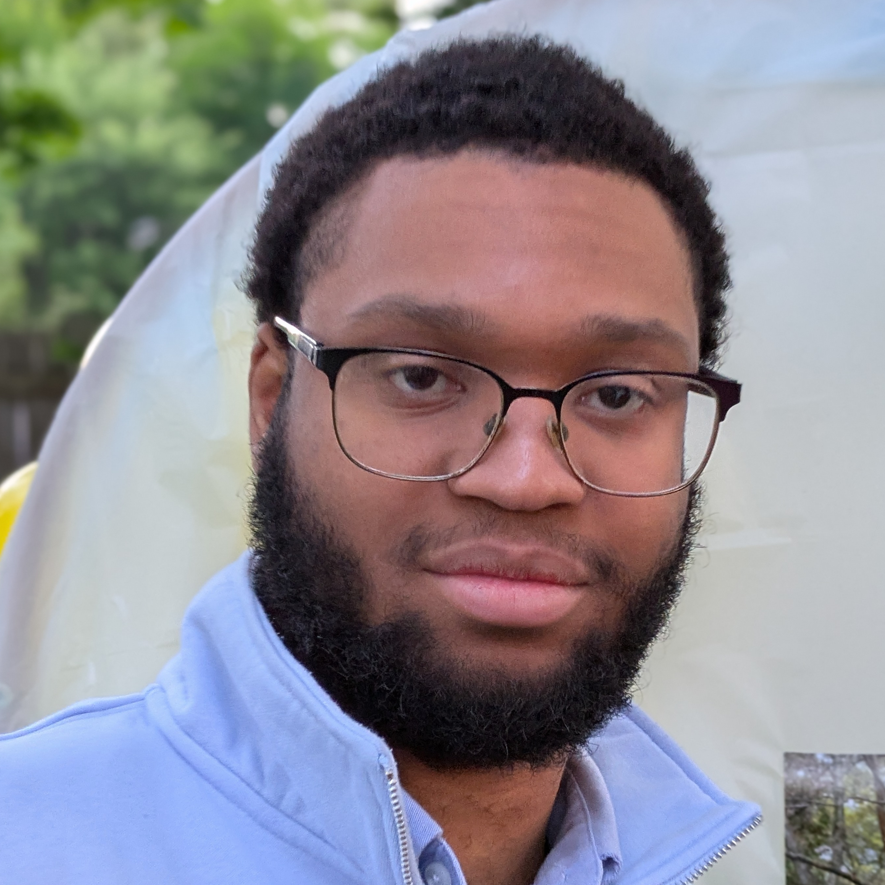
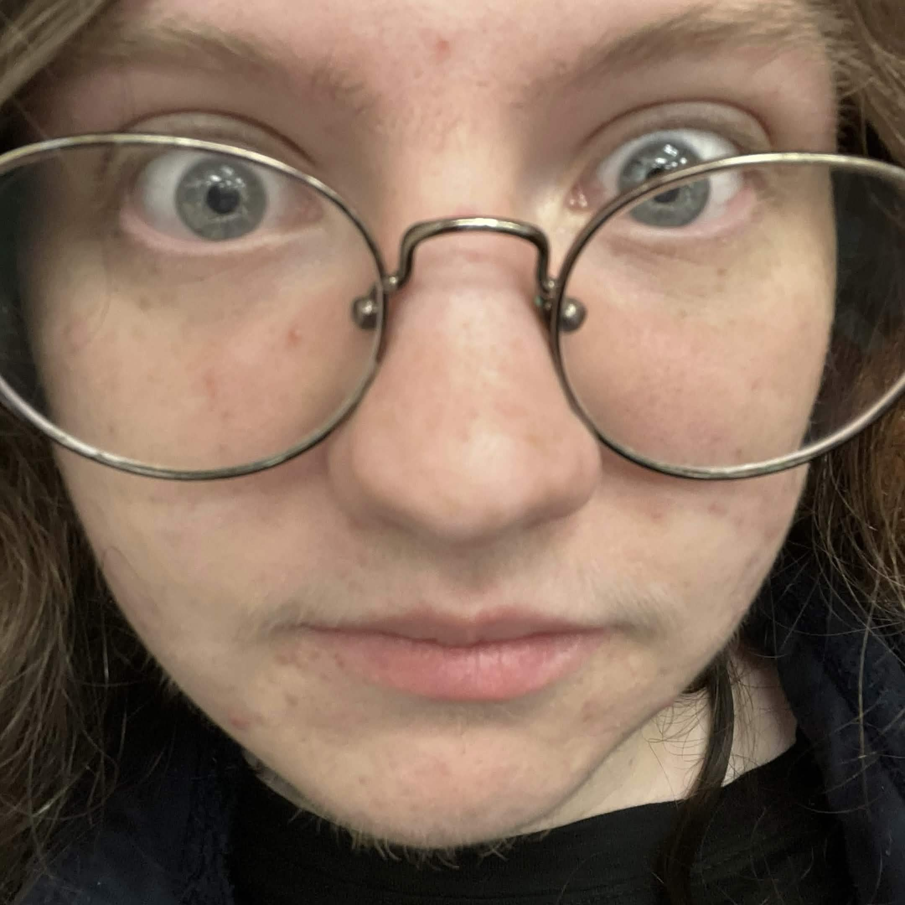

Anderson Leroy is a Haitian American artist whose work is heavily inspired by classical and minimalist styles. He creates art using many media including oil, acrylic, ink, cardboard, and fabric among others. With a stark passion for music and video games, his primary focus is to explore artistic avenues at the intersection of disciplines to tackle themes of genuineness and isolation.
He also likes ghosts.

he is often found grazing the pastures of the world wide web, developing video games for your browser, or crafting other adjacent art things on a computer. you are likely to find him oversharing on the internet through short, autobiographical games.
he posts short solo work under the username "cdertrees" sometimes, using game development as a meditative and reflective practice to help him understand and process his experiences. In larger teams, he works mainly as an illustrator, technical artist, or programmer, depending on the needs of the project. alongside game development, caitlin is interested in printmaking, fiber arts, and textiles.
you should ask him about game poems or alternative milks.
Zach Devine is a Narrative Designer, Programmer, and Team Leader inspired by the artfulness of everyday life. With a background in physical projects such as carpentry, small engines, and leatherworking, he brings a practical and logical perspective to his artistic endeavors. Zach strives to create unusual and unique games that use interactivity as a lens for self-examination - both for himself and for his players.
Fragrance Freak, Kingdom Hearts-Head, Decker Disciple Scrum-dog Millionaire, Words Guy, Organization Overlord